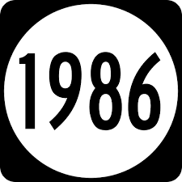

Hi, I'm Natalie and for our first web assignment we have been asked to build a portfolio. In order for there to be some content on my home page (and so all my pages can have the same overall layout) I have decided to do a brief photo timeline of my 34 years prior to university.
-
